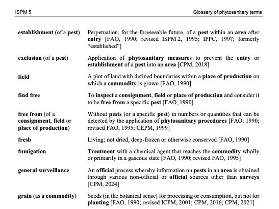

Overview
This is the first in a series of modules that range from introductory guidance, tips for experienced vocabulary practitioners and lessons in using innovative vocabulary tooling. These modules needn't be approached in series order, but note the step-by-step exercise that continues through out other modules. In summary, the modules are:
Introduction to Vocabularies (this module)
- Vocabulary types
- Core properties
- Exercise - start using VocEdit
- Mapping between vocabularies
- Additional properties
- Exercise (continued from Introduction)
- Reuse patterns
- Importing concept from other vocabularies
- Exercise (continued from Advanced)
- VocEdit + GitHub (with new exercise)
- VocExcel
- SHACL Validator
- RDF Converter
- Handling special cases and advanced tips
- 💡 Identifies troubleshooting tips, common errors and potential issues.
- 🚧 Exercises
- 🎬 Videos
Introduction to Vocabularies
As languages speakers, we have developed the categorization of "things" to both understand and communicate our experience of the world. The sheer volume of data that we interact with has necessitated a shared understanding of naming and definition. In large-scale data holdings, standardisation and disambiguation through vocabularies becomes a necessity.
When sharing information across diverse groups, catalogues or software applications, there is need for a common understanding of exactly what is being referred to. This is where controlled vocabularies provide terminology applied to information, driving agreed understanding of concepts. Vocabularies provide both textual labels and definitions for human understanding, and machine-readable unique identifier for machine processing.
Whatever size and shape, the vocabularies mentioned in these modules are designed for describing data and content. Vocabularies can be used to describe (or catalogue) content in information systems. Vocabularies can also optimise search engines and provide the basis for navigation in information systems, making it easier for users to find content and data.
Vocabulary types
In this section we will introduce some common vocabulary types. By introducing simple and more complex vocabulary examples we will introduce some important vocabulary features.
Glossary
... defining terms
Glossaries are a very common form of vocabulary found in many print and web resources. A glossary is a list of concepts, expressed by natural language terms (we will refer to terms and labels interchangeably) with added definitions.

Each concept in a Glossary has at least one label and one definition. Some glossaries include see references that direct a user to a preferred term. This equivalence mapping is a common feature in more complex vocabulary types such as a thesaurus (see below). But first we will look at vocabularies that include hierarchy relationships.
Taxonomies
... a very short history
Taxonomies are vocabularies with hierarchical relationships between concepts. Conventionally, we might say that concept A is broader than concept B, when the all-some rule apples: All B's are A, and some A's are B. For example, all apples are fruit, and some fruit are applies. Therefore, fruit is broader than apples.
Modern taxonomies that are used to organise and retrieve data owe their heritage largely to two disciplines: biology, or the taxonomy of living things, featuring familiar concepts of class, family, genus, species etc..., and financial classifications, where concepts are typically categorised as either function, activity of transaction.
%% Title: **Financial classification**
graph TD
subgraph "Financial classification"
F[Function]
T1[Transaction A]
T2[Transaction B]
A1[Activity 1]
A2[Activity 2]
A3[Activity 3]
F --> T1
F --> T2
T1 --> A1
T1 --> A2
T2 --> A3
end%% Title: Taxonomy of living things
graph TD
subgraph "Taxonomy of living things"
F[Family]
G1[Genus A]
G2[Genus B]
S1[Species 1]
S2[Species 2]
S3[Species 3]
F --> G1
F --> G2
G1 --> S1
G1 --> S2
G2 --> S3
end
classDef green fill:#90ee90,stroke:#333,stroke-width:2px;
class F,G1,G2,S1,S2,S3 green;We will see below in Vocabularies in the context of knowledge graphs how the broader / narrower relationship between concepts can improve search and extraction functions in data where vocabularies are used to enrich data.
Thesaurus
... a (more) complete picture
The modern retrieval thesaurus combines the structure of a taxonomy with additional non-hierarchical relationships and also synonym control. Thesauri establish hierarchy, association and equivalence between terms. Each can be expressed using the Simple Knowledge Organization System (SKOS) properties skos:broader / skos:narrower; skos:relation; and skos:prefLabel / skos:altLabel (W3C, 2009).
graph TD
A[Concept A]
B[Concept B]
C[Concept C]
D[Concept D]
S[Synonym of A]
%% Broader / Narrower relationships
A -- "skos:narrower" --> B
B -- "skos:broader" --> A
%% Associative (related) relationship
A <-- "skos:related" --> C
%% Synonym relationship (using skos:altLabel)
A -- "skos:altLabel" --> S
%% Additional hierarchical relationship for illustration
C -- "skos:narrower" --> D
D -- "skos:broader" --> C💡 Tip: the
skos:relatedproperty is most useful for relating disparate concepts in deep, complex hierarchies. Useskos:relatedsparingly - don't relate everything to everything!
We will look at SKOS properties in more detail in the Properties section.
Vocabularies in knowledge graphs
Thought of as an interconnected system of data classes, a knowledge graph may include vocabularies as additional classes that connect with some or all other classes. In a knowledge graph, a vocabulary concept can be modelled as just another class instance.
One function that vocabularies serve is to supplement and fill semantic gaps in data relations. In the example below, classes A, B an C are each related to each other in some way. Class D is not related to other classes. A concept from a vocabulary is also included, and has relationships to classes A, B and C.
graph LR;
classDef concept fill:#f9f1a5,stroke:#b59a00;
classDef default fill:#dae8fc,stroke:#6c8ebf;
4["CLASS C"];
7["CONCEPT A"]:::concept;
8["CLASS B"];
9["CLASS A"];
10["CLASS D"];
4 -- "relation" --> 7;
4 -- "relation" --> 8;
8 -- "relation" --> 7;
9 -- "relation" --> 7;
9 -- "relation" --> 8;The relationships between classes and concepts is often of a subject nature - that is to say the class instance is about the concept.
graph LR;
classDef concept fill:#f9f1a5,stroke:#b59a00;
classDef default fill:#dae8fc,stroke:#6c8ebf;
4["CLASS C"];
7["CONCEPT A"]:::concept;
8["CLASS B"];
9["CLASS A"];
10["CLASS D"];
4 -- "subject" --> 7;
4 -- "relation" --> 8;
8 -- "subject" --> 7;
9 -- "subject" --> 7;
9 -- "relation" --> 8;Now we will look at a domain example using possible interrelationships between spatial data classes, focusing on roads.
graph LR;
classDef concept fill:#f9f1a5,stroke:#b59a00;
classDef default fill:#dae8fc,stroke:#6c8ebf;
4["Road types"];
7["One Way"]:::concept;
8["Maintainers"];
9["Lane counts"];
10["Seasonality"];
4 -- "subject" --> 7;
4 -- "relation" --> 8;
8 -- "subject" --> 7;
9 -- "subject" --> 7;
9 -- "relation" --> 8;The concept One Way comes from Road directions vocabulary, where the concept One Way From To may be defined as a skos:narrower concept.
graph LR;
classDef concept fill:#f9f1a5,stroke:#b59a00;
classDef default fill:#dae8fc,stroke:#6c8ebf;
4["Road types"];
7["One Way"]:::concept;
8["Maintainers"];
9["Lane counts"];
10["Seasonality"];
11["One Way From To"]:::concept;
4 -- "subject" --> 7;
4 -- "relation" --> 8;
8 -- "subject" --> 7;
9 -- "subject" --> 7;
9 -- "relation" --> 8;
7 -- "narrower" --> 11;Let's assume that the Seasonality class contains data profiled with the One Way From To directional roads concepts. So there is also a relationship with the skos:narrower concept provided in the vocabulary. This hierarchy relationship in the vocabulary then provides a bridge between classes of information.
graph LR;
classDef concept fill:#f9f1a5,stroke:#b59a00;
classDef default fill:#dae8fc,stroke:#6c8ebf;
4["Road types"];
7["One Way"]:::concept;
8["Maintainers"];
9["Lane counts"];
10["Seasonality"];
11["One Way From To"]:::concept;
4 -- "subject" --> 7;
4 -- "relation" --> 8;
8 -- "subject" --> 7;
9 -- "subject" --> 7;
9 -- "relation" --> 8;
7 -- "narrower" --> 11;
10 -- "subject" --> 11;Because of this relation between concepts in the vocabulary, it's possible to make an inference that connects classes that were previously unrelated, such as between Lane counts data and Seasonality data.
graph LR;
classDef concept fill:#f9f1a5,stroke:#b59a00;
classDef default fill:#dae8fc,stroke:#6c8ebf;
4["Road types"];
7["One Way"]:::concept;
8["Maintainers"];
9["Lane counts"];
10["Seasonality"];
11["One Way From To"]:::concept;
4 -- "subject" --> 7;
4 -- "relation" --> 8;
8 -- "subject" --> 7;
9 -- "subject" --> 7;
9 -- "relation" --> 8;
7 -- "narrower" --> 11;
10 -- "subject" --> 11;
9 -. "relation" .-> 10;We know that some roads are closed on a seasonal basis, but we don't know what portion of these are one lane roads. But we do have data about the seasonality of 'One Way From Two' roads, also called 'One way with vector' roads. Because these roads are defined as a type of One Way road (via skos:narrower), we can infer information about seasonal road closures for one lane roads.
Vocabulary properties
Vocabularies contain, as a minimum: preferred labels, definitions and identifiers. We have already introduced concepts relations with other concepts. In this section we will look at more concept properties, including properties that are required for validation in vocabulary quality standards.
Minimum properties: prefLabel, definition and identifier
To comply with VocPub profile (AGLDWG, n.d.), each concept must have at least:
- a
skos:prefLabelwhich is the main way that we say and understand the concept; - a
skos:definition- a short note that describes the concept; - an Identifier - a unique way of distinguishing the concept from other concepts
🚧 Exercise: 0pen, edit and save a vocabulary
These modules will include a number of editing exercises that use the VocEdit tool and the Pest Risk Pathway vocabulary (PRP). The PRP is un-published and hosted by KurrawongAI for training purposes. In this exercise we will add a new concept; a concept preferred label; a concept definition; and a concept identifier.
💡 Chrome browser is needed to use the VocEdit tool.
- Go to Download TTL
(Right-click and choose “Save link as...” to download) - Save the file to your local directory
- Open Chrome (if not already)
- Go to VocEdit
- Select Project > Open > Local file
- Select pestRiskPath_training.ttl from your local directory
- Select Resource > Create new
- Resource type > Concept
- Add http://example.com/pestRiskPath/
- Open a new tab and go to UUID Generator
- Copy the UUID
- Paste the UUID in the IRI field and after the stem http://example.com/pestRiskPath/. So the full IRI should look be: http://example.com/pestRiskPath/[UUID]
- Select Create
- Edit > prefLabel > "+" > Literal string with language
- Add Wind dispersal
- In Lang box, Add* "en"
- definition > Add a literal with language
- Add Dispersal of pests by wind
- In Lang box, Add* "en"
- Concept scheme relationships - topConceptOf > Select "+" > IRI
- Select a value > select pestRiskPath
- Save
The pestRiskPathway.ttl will now be updated in your local directory, with the new concept Wind dispersal added.
Broader / Narrower
We have already introduced the skos:broader and skos:narrower relationships in the sections on taxonomies and thesaurus vocabularies.
Depending on the type and complexity of a vocabulary, there may be a requirement that all concepts are related to another concept via skos:broader property. In a taxonomy or thesaurus vocabulary project, a concept that does not have a skos:broader concept may be considered an orphan, unless it is a top concept, indicated with the skos:topConceptOf property. The SKOS standard does not require concepts to be arranged in a hierarchy. Some vocabularies will be mostly flat with only selected concepts in narrower relationships to broader concepts.
If a skos:Concept does not have a skos:broader property, the VocPub profile requires that it must reference the relevant skos:ConceptScheme IRI with the skos:topConceptOf property.
Tip: Broader and narrower relationships are reciprocal - that is, if A is broader than B, then B is narrower than A. For example:
- Dynamic land cover
skos:broaderLand cover and land use -
Land cover and land use
skos:narrowerDynamic land cover -
Apples
skos:broaderPomme fruit -
Pomme fruit
skos:narrowerApples -
Hospitals
skos:narrowerPrivate hospitals - Private hospitals
skos:broaderHospitals
Arranging concepts into a hierarchy supports discovery via:
- Search expansion - a system can expand results by matching any narrower concepts of a search term, e.g. a search for Granitoid returns resources about granitoid OR granite
- Navigation - top-down navigation or breadcrumb links can be launched in an interface using broader / narrower relationships. For example, clicking on Pomme fruit launches a list of links to apples, pears and quinces
In a vocabulary, it's possible to keep adding narrower relationships by creating more and more specific concepts. For example, a catalogue that is about horticulture probably needs a vocabulary with more specific (narrower) concepts than just apples (e.g. Kiku Fuji).
💡 Only add narrower concepts that you would expect to be used to describe content in a catalogue, and distinguish that content from others, with that concept. Don't make a vocabulary hierarchy very deep with specific concepts just because you can!
🚧 Exercise: add broader concept relations
In this exercise we will add a skos:broader relationship between two concepts. Note that once a concept has a broader relationship, it is no longer indicated by skos:topConceptOf and and 'top concept' status is removed.
- Go to VocEdit in Chrome
- Project > Open
pestRiskPath_training.ttlfrom your local directory - Select Spore dispersal from the left-hand list of concepts
- Concept relationships > Broader > Add a new value > IRI
- From the Select a value dropdown, search for or select Host plants > select
- Save
This change optimises the SKOS model by applying a broader relationship between concepts that are conceptually broader and narrower. In a retrieval system we might expect a query for resources about host plants as pest vectors to return a resource about Spore dispersal. The skos:broader relation support such an inference.
Alternative labels
Each concept must have at least one Preferred label (skos:prefLabel), based on the word or phrase that best describes the concept. We often use different terms to mean the same thing - the skos:prefLabel should be the term that is used most frequently, or understood and used by most expected users of a system or catalogue.
In addition, each concept may have one ore more Alternate labels (skos:altLabel). It's a good idea to add one or more altLabel to a concept so that it can be found in different ways. A concept can have any number of alternate labels, provided they are similar enough to the common understanding of the concept.
💡 Tip: when adding a skos:altLabel, ask this question: If I searched with a preferred label, and found some information matching an alternative label in the text, would I be satisfied by the search result?
Here are some common scenarios where we might need to choose between preferred and alternative labels:
Common vs Scientific terms
Connect scientific or technical names with common names. For example:
- Red imported fire ant
skos:altLabelSolenopsis invicta - Boghead Coal
skos:altLabelTorbanite - Spore dispersal
skos:altLabelSporulation
Superseded terms
Even if a term is no longer used in recent content, users may still search a catalogue using superseded language. Storing superseded terms as alternative labels helps to group content that contains antiquated language with content written in current language. For example:
- Aeolian Sand
skos:altLabelEskimo Sand - Utility hole
skos:altLabelManhole
Acronyms vs phrases
In general, an acronym or initialism should be managed as an skos:altLabel; example:
- Greenhouse gasses
skos:altLabelGHG
An exception is when the acronym is better known or more frequently used. For example:
- TNT
skos:altLabelTrinitrotoluene - CSIRO
skos:altLabelCommonwealth Scientific and Industrial Research Organisation
Official vs common language
Use an altLabel to connect official or technical language with natural language. For example:
- Bi-directional
skos:altLabelTwo way - Alcohol-impaired driving
skos:altLabelDrink-driving
🚧 Exercise: add alternative labels
In this exercise we will add an alternative label to a concept.
💡 Tip: You will need to first add the skos:altLabel property to VocEdit as it is not required by VocPub.
- Go to VocEdit in Chrome
- Project > Open
pestRiskPath_training.ttlfrom your local directory - Select Spore dispersal from the left-hand list of concepts
- Other Properties > Add property
- Add http://www.w3.org/2004/02/skos/core#altLabel > Add property
- in the altLabel field you just created > "+" > Add new value > Literal with language
- Add Sporulation
- Add "en" to lang field
- Save
Top Concepts
If a skos:Concept does not have a skos:narrower relationship, it is automatically assumed to be a skos:topConceptOf a skos:ConceptScheme and must be declared as such.
A concept may be moved out of the
Concept Scheme
A Concept Scheme is some metadata about the vocabulary as a whole - the vocabulary title (skos:prefLabel), a definition (skos:definition), and a unique identifier are minimum requirements. All vocabularies must have a Concept Scheme, and it should include:
-
an Identifier - create an IRI following the same pattern as the IRIs for concepts. For the suffix, instead of a concept ID, add a Concept scheme ID. This may be the name of the Concept scheme (the vocabulary), e.g.: -
https://linked.data.gov.au/def/road-types... where Road types is the name of the concept scheme. -
a Preferred label - the same property that is used for a Concept. Use a Preferred label for the name or title of the vocabulary (this may also be used for the Concept Scheme ID)
- a Definition - a definition of the Concept Scheme. Use plain text only but paragraphs may be separated by newlines. Also used for Concepts
- a Created date. When the Concept Scheme was first created. This might be automatically created by a vocabulary editor
- a History note - a note on the origin or history of a vocabulary - such as how or from what it was generated.
🚧 Exercise: edit a concept scheme
We will continue to edit the Pest Risk Pathway vocabulary, but this time we will edit the concept scheme which is the metadata about the vocabulary as a whole.
- Go to VocEdit in Chrome
- Project > Open
pestRiskPath.ttlfrom your local directory - Select Pest Risk Pathway from under Vocabularies in the left-hand panel
- Annotations > definition > "+" > Add a new value > literal with language
- Add A vocabulary describing various structures, modes and activities that introduce unwanted pests, weeds and diseases.
- Add "en" to lang field
- Save
Summary
In this module we have introduced vocabularies - different types and how they are useful. We have also used a vocabulary editing tool to create the minimum elements for a concept and a concept scheme.
References and Further Reading
- AGLDWG. (n.d.). VocPub profile specification. Retrieved April 17, 2025, from https://linked.data.gov.au/def/vocpub
- W3C (n.d.). QSKOS. Retrieved March 5, 2025, from https://www.w3.org/2001/sw/wiki/QSKOS
- W3C (2009). SKOS reference. https://www.w3.org/TR/skos-reference/
- W3C (2014). Turtle: Terse RDF triple language (W3C Recommendation). Retrieved from https://www.w3.org/TR/turtle/